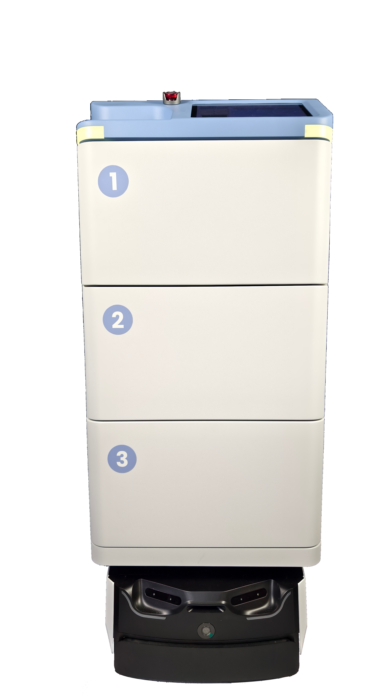

医院医疗废弃物怎么用机器人回收转运？医废闭环管理方案

医疗废弃物（医废）回收是医院后勤的高风险环节：既要防止泄漏与交叉污染，又要做到来源可查、去向可追。双擎科技（杭州）有限公司的 AMR 物流方案，把「洁污分流」延伸到医废回收的闭环管理，让高风险污物的转运更少依赖人工、更多留下数字足迹。
医废回收的难点
传统医废靠人工收集、集中暂存，存在暴露风险与交接不清的问题。尤其在感染科、检验科、手术室等点位，污物回收的频次与规范性要求高，人工模式难以全程留痕，一旦出现问题往往无法快速定位责任环节与时间节点。
AMR 如何做污物闭环
双擎以 AMR、多模态感知与融合、VLA 大模型及自研 EI-Core 框架为核心，由 RCS 调度系统统一编排回收任务、规划路径。污物与洁物通过不同任务队列与载具形态分流，配合身份核验与全程记录，形成「收集—转运—暂存」的闭环，每一袋医废都能对应到产生点位与时间。回收载具支持封闭与称重记录，在交接节点自动生成电子联单，替代纸质登记。
与洁污分流一脉相承
医废回收是医院洁污分流逻辑的延伸。双擎-AMR 医院柔性物流整体解决方案覆盖药品/物资配送、标本转运、智能消毒与调度中枢，污物回收可以复用同一套 RCS 与载具体系，避免为单一环节另起一套系统，也降低后勤管理的复杂度。
合规与安全
医废回收对院感与生物安全尤为敏感。双擎消毒机器人（净宝 FS01、消消 FS03 雾化消毒，海葵/U1 紫外线消毒获 CE 认证）可与回收流程协同，在暂存与转运节点做移动消毒；同时机器人替代人工进入高风险区域，降低职业暴露与二次污染的可能。
落地建议
建议医院先把高风险的感染性医废点位纳入机器人回收试点，用 RCS 做任务排程与追溯，再逐步覆盖全院。双擎科技具备从外观设计、硬件开发到算法部署的全流程模块化定制能力，可按院感要求定制封闭载具与回收流程。